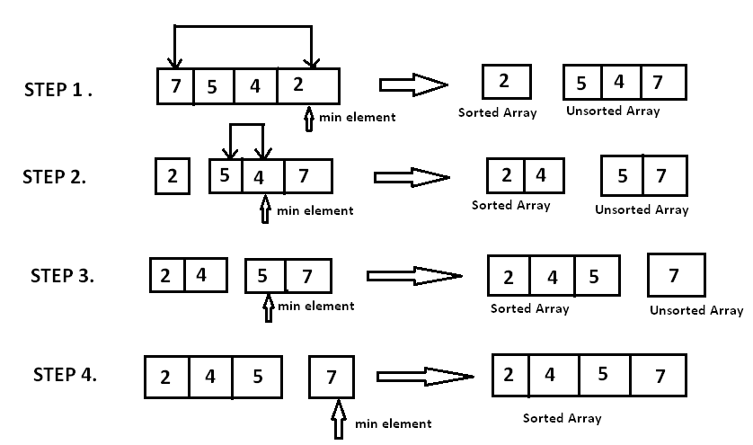

Average Complexity O(n2)
Best Case O(n2)
Worst Case O(n2)
Space Complexity O(1)

Description:
In computer science, selection sort is an in-place comparison sorting algorithm. It has an O(n2) time
complexity, which makes it inefficient on large lists, and generally performs worse than the similar insertion
sort. Selection sort is noted for its simplicity and has performance advantages over more complicated algorithms
in certain situations, particularly where auxiliary memory is limited.
The algorithm divides the input list into two parts: a sorted sublist of items which is built up from left to
right at the front (left) of the list and a sublist of the remaining unsorted items that occupy the rest of the
list. Initially, the sorted sublist is empty and the unsorted sublist is the entire input list. The algorithm
proceeds by finding the smallest (or largest, depending on sorting order) element in the unsorted sublist,
exchanging (swapping) it with the leftmost unsorted element (putting it in sorted order), and moving the sublist
boundaries one element to the right.
One thing which distinguishes selection sort from other sorting algorithms is that it makes the minimum possible number of swaps, n − 1 in the worst case.